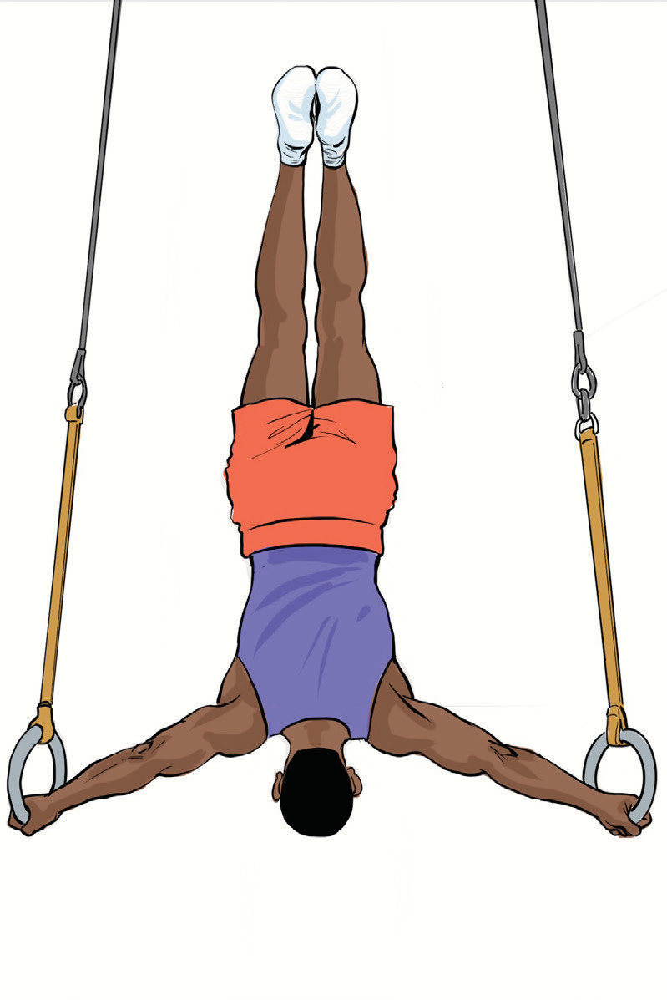

Inverted hang
An inverted hang is a position where a gymnast hangs upside down from a bar, rings, or another apparatus with body fully extended in a controlled shape. This skill helps develop core strength, body awareness, and inversion control, which are essential for flips, giants, and other advanced skills. There are various forms of the inverted hangs including straight body, tuck, pike inverted hangs and an inverted hang on rings. The following are general steps that will help you practice the inverted hangs:
Hold the apparatus using an overhand grip (on a bar) or a neutral grip (on rings);
Pull yourself upside down with legs tucked or straddled using your core and shoulders to control the motion. Keep your arms slightly bent or straight, depending on the apparatus;
Hold the position by engaging your core, back, and shoulders keeping your legs together and pointed for proper form, Figure 4.33; and
Lower yourself in a controlled manner to exit avoiding swinging too much. If on rings, return to a normal hang before dismounting.
